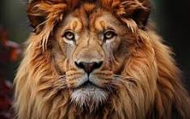

Objetivo
Esta sección tiene como finalidad reunir enlaces de diversas páginas para proporcionar información adicional de manera más accesible
Lista de links
National Geographic - Naturaleza
Contenido sobre animales, plantas, ecosistemas y conservación.Encyclopedia of Life
Una enciclopedia colaborativa que reúne datos sobre todas las especies conocidas.Animal Diversity Web (University of Michigan)
Detalles científicos y educativos sobre animales, hábitats y ecología.iNaturalist
Plataforma colaborativa para identificar plantas y animales, y compartir observaciones.The Nature Conservancy
Proyectos y noticias sobre conservación ambiental, fauna y flora.Gracias por ver
